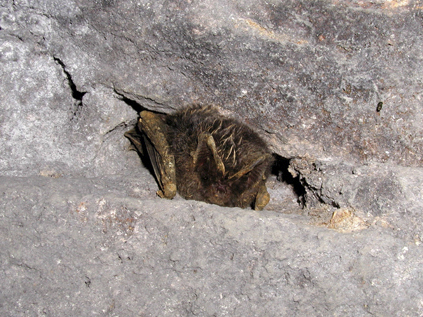
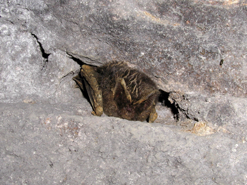

Netopiere
V roku 1964 boli Dubnícke opálové bane vyhlásené za chránené nálezisko zimujúcich netopierov. Najväčšmi sú zastúpené druhy uchaňa čierna (Barbastella barbastellus), netopier obyčajný (Myotis myotis), podkovár malý (Rhinolophus hipposideros) a netopier brvitý (Myotis emarginatus). V menšej miere, ale pomerne pravidelne, zimujú netopier vodný (Myotis daubentoni), netopier ostrouchý (Myotis blythi), ucháň svetlý (Pleocotus auritus) a podkovár veľký (Rhinolophus ferrumequinum). Ojedinele a vzácne sa v opustených banských dielach ukladajú na zimný odpočinok ucháň sivý (Pleocotus austriacus), netopier pobrežný (Myotis dasycneme), večernica pozdná (Eptesicus serotinus), večernica severská (Eptesicus nilssoni), netopier veľkouchý (Myotis bechsteini), netopier fúzatý (Myotis mystacinus), netopier Brandtov (Myotis brandti) a netopier riasnatý (Myotis nattereri).
Pre prvých šesť vymenovaných druhov je toto zimovisko významné, pre ďalších päť stredne významné a pre ostatné druhy málo významné. Ich počty od roku 1962, keď tu bolo napočítaných 2685 ks netopierov dvanástich druhov postupne klesali. Najhoršie to bolo v rokoch 1984 až 1993, keď bolo v opálových baniach narátané priemerne okolo 1000 ks netopierov ročne. Za tento pokles sú predovšetkým zodpovední zlodeji opálov a necitlivé zabetónovanie niektorých vchodov. Od roku 1994, teda prakticky od začiatku našich prieskumných prác v podzemí, pri dodržiavaní dohodnutých zásad ochrany zimoviska netopierov, počty zrátaných netopierov každoročne rastú. V roku 1995 to bolo už 1700 netopierov, v roku 1998 takmer 2000, v roku 2001 tesne pod 4000 a po roku 2003 vždy viac ako 4000 netopierov pričom bolo narátaných až 16 druhov, ktoré prezimovávajú v tomto chránenom areáli. Z celkového pohľadu zimuje na tomto území asi 30 % vzácnych netopierov z územia celého Slovenska. Pre viaceré, tu zimujúce druhy, má táto lokalita prioritné miesto. Prehľad počtov niektorých netopierov zimujúcich v starých banských dielach po ťažbe drahých opálov, ich percentuálneho zastúpenia z hľadiska zimujúcich netopierov na území celého Slovenska a významnosti zimoviska je prehľadne uvedené v nasledujúcej tabuľke.
| Slovenský názov | Latinský názov | Počet netopierov | % z celého Slovenska | Významnosť zimoviska |
|---|---|---|---|---|
| Netopier brvitý | Myotis emarginatus | 437 | 83,2 | 1 |
| Netopier vodný | Myotis daubentoni | 94 | 67,1 | 1 |
| Netopier pobrežný | Myotis dasycneme | 6 | 50,0 | 1 |
 
